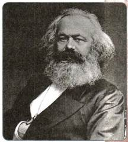
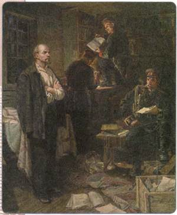
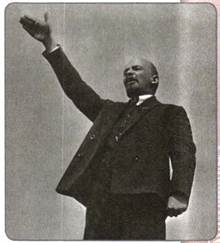
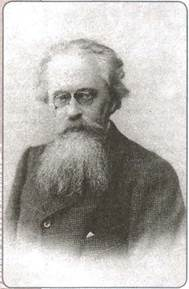
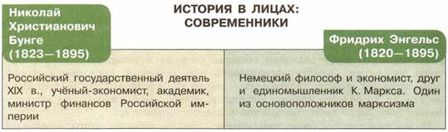

Какое влияние оказало на общественные настроения убийство народовольцами императора Александра II? Какие важнейшие изменения произошли в общественном движении в период правления Александра III?
1. Революционное народничество
Революционное народничество в 1880-е гг. переживало упадок. Во многом это было вызвано тем, что власти после убийства императора Александра II членами организации «Народная воля» предприняли меры по пресечению деятельности террористов. К 1883 г. организация народовольцев была разгромлена усилиями политической полиции.
Революционное народничество в 1880-х гг. во многом потеряло и свои идейные ориентиры. Ведь к этому времени революционеры испробовали на практике все предложения теоретиков народничества: пытались поднять крестьян на восстание, вели пропаганду, организовали заговор и не погнушались убийством главы государства. Результат этого всего получился даже не нулевой, а отрицательный: вместо «победы социализма» в стране лишь укрепилось самодержавие. Не случайно многие народники в это время пересмотрели свои взгляды. Некоторые обратились к иным социалистическим учениям, другие отошли от революционного движения и, перейдя в либеральный лагерь, начали поиски мирного пути к социализму. Были и те, кто полностью переменил свои убеждения. Так, один из вождей «Народной воли» Л. А. Тихомиров в результате этой переоценки стал убеждённым сторонником самодержавия, получил прощение Александра III и вернулся из эмиграции в Россию.
Правда, у революционного народничества по-прежнему оставалось немало поклонников. В 1880-х гг. возникало немало кружков продолжателей дела «Народной воли». Но дальше попыток добыть оружие, изготовить взрывные снаряды дело, как правило, не шло — кружки либо распадались сами, либо их громила полиция. Возрождение движения, представители которого исповедовали идеи революционного народничества, началось только после смерти Александра III, к концу 1890-х гг. Единственная серьёзная попытка покушения на Александра III была предпринята группой учащейся молодёжи Петербурга, считавшей себя наследниками «Народной воли». Видную роль среди них играл А. И. Ульянов. 1 марта 1887 г., в годовщину убийства Александра II, они хотели совершить новое цареубийство, но были схвачены следившей за ними полицией, преданы суду и казнены.
2. Русский марксизм
Новым явлением русской общественной жизни стало марксистское движение. Сторонники социалистических идей обратились к учению немецкого революционного философа и экономиста К. Маркса, который вместе со своим единомышленником Ф. Энгельсом доказывал, что условия для установления социалистических отношений возникают лишь после утверждения господства буржуазии — капитализма.
В ходе развития капитализма складывается мощный рабочий класс; только он и сможет осуществить переход общества к социализму. Маркс и Энгельс говорили о неизбежности борьбы рабочих с буржуазией, так же как и о неизбежности их победы в этой борьбе.
В 1880-е гг. многим представителям русского общества было очевидно, что в стране утверждается капитализм. Одновременно наблюдался и рост рабочего движения. Всё это противоречило народническим теориям, утверждавшим, что Россия достигнет социализма, минуя капитализм. Некоторые народники пришли к выводу о необходимости пересмотра своих взглядов. В результате появилась первая русская марксистская организация — группа «Освобождение труда».

К. Маркс

Обыск у В. И. Ленина в селе Шушенском. Художник В. Р. Волков
Группа «Освобождение труда» сложилась в Женеве (Швейцария) в 1880-е гг. и состояла из членов «Чёрного передела», которые бежали туда из России. В группу входило пять человек: Г. В. Плеханов, В. И. Засулич, П. Б. Аксельрод, Л. Г. Дейч и В. Н. Игнатов. Признанным лидером группы стал Плеханов.
Члены группы «Освобождение труда» пришли к следующим выводам: Россия после 1861 г. движется по капиталистическому пути, что неизбежно ведёт к увеличению численности рабочих и соответственно к полному распаду крестьянской общины. Надежды на «общинный социализм» не имеют никакого основания. Зато пролетариат в России год от года будет расти и крепнуть. Именно он может и должен привести Россию к социализму, установив свою диктатуру (политическое господство, неограниченную власть) и проведя преобразования во всех сферах жизни. Для этого необходимо придать рабочему движению сознательность, внести в него научно разработанную теорию, вооружить программой действий. Эти задачи может осуществить только революционная, проникнутая духом марксистского учения интеллигенция.
С целью формирования такой интеллигенции члены группы переводили на русский язык важнейшие труды Маркса, Энгельса и их последователей, создавали свои собственные сочинения, в которых с марксистских позиций рассматривали положение в России. Особенно важную роль сыграли книги Плеханова «Социализм и политическая борьба» (1883) и «Наши разногласия» (1885). Резко критикуя основы народнического учения, упорно доказывая преимущество марксизма, Плеханов и его сторонники стремились увлечь за собой русских революционеров. Их усилия не пропали даром: в России с каждым годом появлялось всё больше убеждённых сторонников марксизма.
В это время, как правило, среди студентов возникают небольшие марксистские кружки: в Петербурге — под руководством Д. Благоева, П. В. Точисского, М. И. Бруснёва, в Казани — под руководством Н. Е. Федосеева. Их члены стремились овладеть марксистским учением и наладить связь с рабочими, принять участие в организации забастовок.
В 1895 г. кружки петербургских марксистов сложились в единый «Союз борьбы за освобождение рабочего класса», во главе которого встал В. И. Ульянов (Ленин), младший брат казнённого в 1887 г. А. И. Ульянова. Это была организация нового типа: значительно более многочисленная и дисциплинированная, чем прежние. В неё входило несколько кружков, занятых пропагандой марксизма среди рабочих. Связи с рабочими, установленные членами «Союза борьбы...», позволили ему возглавить стачку текстильщиков Петербургского района. Она приняла небывалый размах, охватив рабочих почти двух десятков предприятий.
В том же 1896 году «Союз борьбы...» был разгромлен полицией; значительная часть его членов, в том числе и Ленин, были отправлены в ссылку. Однако деятельность этой организации дала мощный толчок марксистскому движению в России. По образу и подобию петербургского «Союза борьбы...» стали возникать организации в других промышленных центрах — Москве, Киеве, Екатеринославе, Иваново-Вознесенске. В результате перед марксистским движением открылась возможность создания единой партии.

В. И. Ленин
3. Либеральное движение
В конце XIX в. значительно организованнее и сильнее становится либеральное крыло общественного движения. Главной опорой либералов оставались земства.
По мнению либералов, именно земство должно было стать основой конституционных преобразований в России. Для этого следовало лишь достроить систему органов местного самоуправления. Необходимо прежде всего создать третий уровень самоуправления (помимо уездных и губернских земств): на основе губернских земств организовать всероссийский представительный орган, который должен участвовать в выработке законов. Если бы это было сделано, то Россия, по мнению либералов, совершила бы переход от деспотического государственного устройства к конституционному.
Неоднократные попытки либеральных земцев добиться этого легальным путём — подавая прошения правительству, доводя до его сведения разнообразные записки на эту тему — не давали никаких результатов. Постепенно наиболее решительно настроенные земцы — братья Павел и Пётр Долгоруковы, Д. И. Шаховской, Ф. А. Головин и др. — пришли к мысли о необходимости нелегальной деятельности, направленной на сближение земств. Подобные настроения стали особенно сильными после голода 1891 —1892 гг. Правительство, тогда оказавшееся не в силах справиться с последствиями бедствия, вынуждено было частично передать дело помощи голодающим в руки земств. Эта работа способствовала активизации земской деятельности. Либерально настроенные земцы, как никогда раньше, ощутили свою силу и возможности, установили связи друг с другом и готовились к созданию своей собственной организации.
Либеральные идеи были распространены и в среде интеллигенции, в особенности у представителей её верхушки — профессоров, известных юристов. Конституционалисты (сторонники введения конституционного правления) — П. Н. Милюков, В. И. Вернадский, А. А. Корнилов и др. — поддерживали тесные связи с земцами. В конце XIX в. они сгруппировались вокруг газеты «Русские ведомости» и журнала «Русская мысль».

Н. К. Михайловский
Но существовали и такие течения, для представителей которых политические реформы играли второстепенную роль. Гораздо больше их волновало бедственное положение народа; они считали жизненно необходимыми преобразования в экономике и общественных отношениях. Прежде всего это касалось либеральных народников. Это название во многом условно, так как все народники, в отличие от либералов, оставались сторонниками социализма. Однако либеральные народники рассчитывали добиться его создания мирным путём: через организацию помощи крестьянам, наделение их землёй путём реформ, развитие сельской кооперации (различных объединений крестьян). Представители этого течения — врачи, учителя, статистики — составили самую значительную часть земской интеллигенции. Наиболее яркими лидерами либерального народничества являлись сотрудники журнала «Русское богатство» Н. К. Михайловский, В. Г. Короленко и др., а также публицист газеты «Неделя» Я. В. Абрамов.

ПОДВЕДЁМ ИТОГИ
В 1880-е — начале 1890-х гг. российское общество во многом пересматривало свои взгляды, перерабатывало старые идеи, воспринимало и развивало новые.
Вопросы и задания для работы с текстом параграфа
1. Какие перемены происходили в революционном народничестве в 1880-е гг.?
2. Назовите причины усиления влияния либерального народничества. 3. Когда и почему возникла группа «Освобождение труда»? Какие задачи она перед собой ставила? 4. Расскажите о первых марксистских организациях в России. Что привлекало в марксизме некоторых бывших народников? 5. Как развивалось либеральное движение в 1880—1890-е гг.? Назовите основных деятелей этого движения и их позиции. 6. В чём причина перехода либералов в конце XIX в. к более консервативным позициям?
Думаем, сравниваем, размышляем
1. Назовите основные противоречия между позицией консерваторов и позициями либералов и народников. 2. О силе или слабости государственной власти говорит создание тайной организации консерваторов? Аргументируйте свой ответ.
3. Используя материалы учебника, подведите итоги основных этапов развития общественного движения на протяжении всего XIX века. 4. Привлекая источники Интернета, составьте, разбившись на несколько групп, презентации на тему «Учёные и писатели конца XIX в. — сторонники народнических и либеральных идей». 5. Какие факты, на ваш взгляд, позволили Г. В. Плеханову и его единомышленникам говорить об общности исторических судеб стран Западной Европы и России? Согласны ли вы с подобной точкой зрения? Аргументируйте своё мнение.